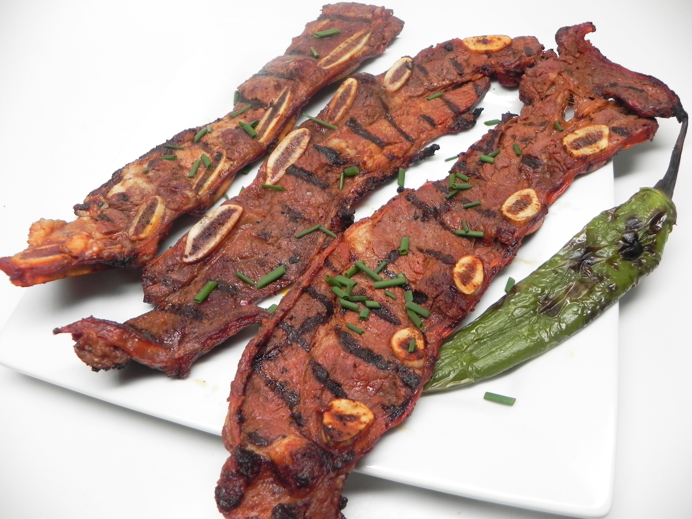

Kalbi Ribs

Crispy Fatty BBQ Ribs
Thin sliced ribs cut against the bone. These are extra fatty/chewy ribs and should be grilled extra crispy.
Ingredients
- Kalbi Style Ribs
- Soy Sauce
- Green Onion
- Mirin
- Sesame Oil
- Sugar
- Kiwi
Instructions
- Add ingredients together to form marinade
- Grate kiwi into marinade
- Marinate meat for at least 8 hours
- Grill meat until charred
- Enjoy your ribs